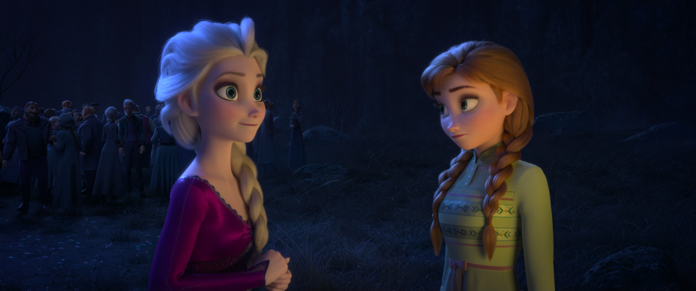
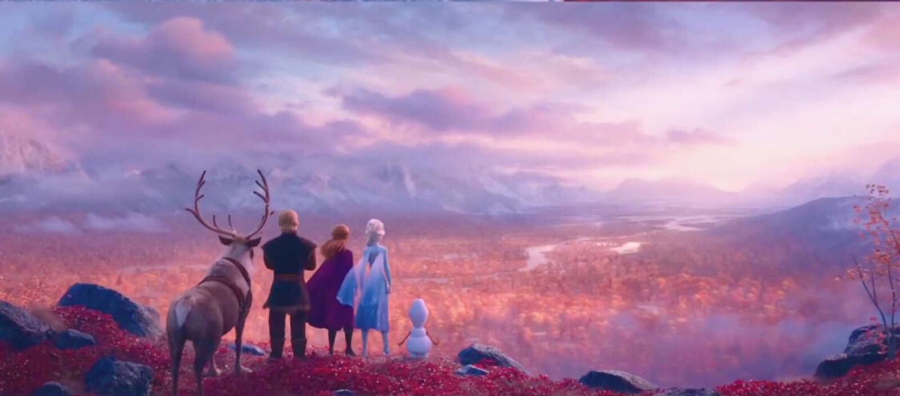

📖 故事 · 电影剧情
《冰雪奇缘2》(2019) 正传事件序
电影剧情
16
本卷页数
2
主电影
中/英
双语
官方设定：Frozen II 发生在 Frozen 之后 3 年（见《Frozen 2 青少小说》开篇设定）。本章按电影2主序列整理，融合《电影2艺术设定集》《电影2官方特刊》与官方电影小说版《Frozen 2 Delu…
📖 《冰雪奇缘2》(2019) 正传事件序
官方设定：Frozen II 发生在 Frozen 之后 3 年（见《Frozen 2 青少小说》开篇设定）。本章按电影2主序列整理，融合《电影2艺术设定集》《电影2官方特刊》与官方电影小说版《Frozen 2 Deluxe Junior Novel》——三者一致，均属官方正典。（来源：《Frozen 2 青少小说》（官方电影小说版，全篇，与正片一致））
📄 召唤与出发
- 秋·阿伦黛尔神秘呼唤：艾莎夜中听见远方声音，唱《Into the Unknown》，内心挣扎于责任与使命召唤。（来源：《电影2艺术设定集》· 第 p.038 / p.142 / p.143；《电影2官方特刊》· ch.3）
- 入森林穿越雾之穹顶：众人随艾莎进入魔法森林，穿越静电闪烁的雾之穹顶（内含四元素石碑）。（来源：《电影2艺术设定集》· 第 p.068 / p.069）
📄 北境与真相
- 北境遇北境民族与将军：遇见 Yelana、Honeymaren、Ryder 与困于森林多年的 Mattias 将军；火之灵 Bruni 在冲突中现身。（来源：《电影2艺术设定集》· 第 p.098 / p.074 / p.117；《电影2官方特刊》· ch.39）
- 森林发现父母沉船：在森林中发现父母当年的沉船（彩窗歌剧感），线索指向北境与暗海。（来源：《电影2艺术设定集》· 第 p.078 / p.079 / p.081）
- 失落洞窟安娜的低谷：安娜跌入绝壁深坑（情绪最低点），唱《The Next Right Thing》——"做下一件对的事"。（来源：《电影2艺术设定集》· 第 p.119 / p.120 / p.121）
📄 暗海与记忆
- 暗海驯服水灵 Nokk：艾莎独穿 Dark Sea（黑海滩/闪电），驯服水之灵 Nokk，造冰船送安娜与 Olaf。（来源：《电影2艺术设定集》· 第 p.125 / p.128 / p.138）
- 阿塔霍兰Show Yourself 与化冰：艾莎抵达记忆冰川 Ahtohallan，唱《Show Yourself》见父母童年回忆，因"走得太远"而被冰封。（来源：《电影2艺术设定集》· 第 p.145 / p.147 / p.149 / p.158）
📄 终幕
- 终幕毁坝与让位：安娜读懂父母遗留的"摧毁水坝"真相，推倒大坝；洪水来袭时艾莎以"统一雪花"符号安抚水而非挡水，森林解放。安娜继位为女王，艾莎终幕白裙融四元素、驻守魔法森林。（来源：《电影2艺术设定集》· 第 p.045 / p.048 / p.139 / p.152；《电影2官方特刊》· ch.3）（来源：《Frozen 2 青少小说》（官方电影小说版，全篇））
""Her magic takes the form of ice; it comes from water… She's part of nature in an essential way." — 来源：《电影2艺术设定集》· 第 p.011（序言）
📌 《Show Yourself》序列中的阿塔霍兰记忆冰川——"记忆"实体存在于冰体内部（电影2艺术设定集）。（来源：《电影2艺术设定集》· 第 p.145）
🎬 电影档案
2019-11-22
北美上映
14.5 亿+
全球票房（美元 · 上映时动画影史第一）
约 143 分钟
片长
Chris Buck & Jennifer Lee
导演
Kristen Anderson-Lopez & Robert Lopez
词曲创作 · 再执笔
奥斯卡提名
最佳原创歌曲 · Into the Unknown




📌 本页要点
你正在阅读《故事》卷的「《冰雪奇缘2》(2019) 正传事件序」。本页由电影正典、官方设定集与官方小说综合梳理，可作为该主题的速查入口；右侧目录可快速跳转到本页各小节。